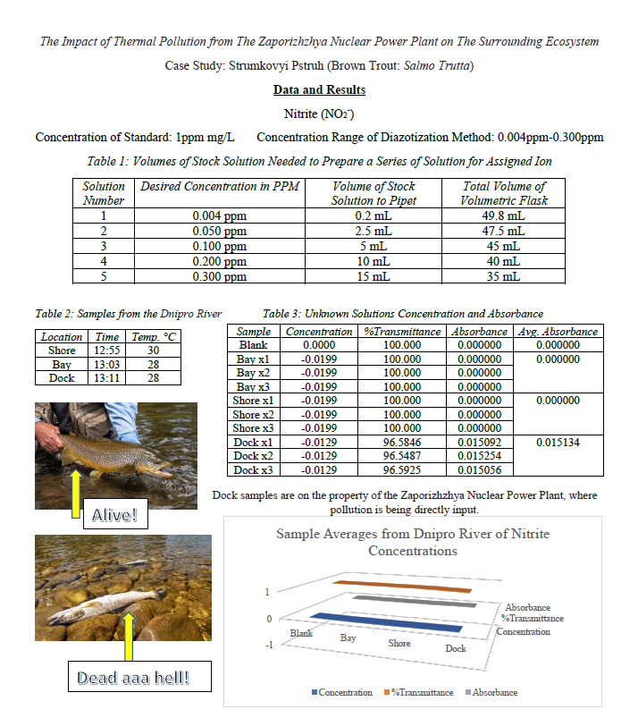

The Impact of Thermal Pollution from The Zaporizhzhya Nuclear Power Plant on The Surrounding Ecosystem
Case Study: Strumkovyi Pstruh (Brown Trout: Salmo Trutta)
Purpose
The Dnipro River aquatic ecosystem is being compromised by thermal pollution from Zaporizhzhya Nuclear Power Plant. Large quantities of heated water are being input into the Dnipro River and is subjecting the local ecosystem to mass environmental casualties. This sudden and drastic loss of life is causing further ecological rebound within the ecosystem surrounding Zaporizhzhya.
Key food sources for the are becoming extremely limited for the staple trout species, Brown Trout (Salmo Trutta) that dwell in the waterways connected to the Dnipro River. Additionally, the significant temperature increase in the water is causing reproductive decline in the trout population. The warmer water is significantly reducing the fertility of trout and greatly reducing the size of trout clutches.
Thermal pollution and leachate of excess nutrients into the ecosystem from the waste materials in the Zaporizhzhya Nuclear Power Plant and is also increasing the growth of cyanobacterium within the ecosystem. Through the process of nitrification, the algae and cyanobacterium can flourish, stripping the water sources of oxygen and sunlight and hindering the health of the ecosystem. Measuring the nitrite (NO2-) concentrations within samples taken from areas surrounding the power plant will provide a better understanding of the harm the ecosystem and precious trout populations face.
Because of this great risk to the greater Zaporizhzhya area’s brown trout populations, the TROUT LIBERATION FRONT vows to bring about the shutdown and neutralization of the Zaporizhzhya Nuclear Power Plant in order to protect the trout who cannot fight for themselves.
Procedure
Part A: Preparation of Calibration Curve
- MicroLab> Beer’s Law Concentration> Run a blank of deionized water to calibrate
- All samples will be developed according to the procedures. Test tubes will be capped, and samples shaken well. Return the solutions to the original tubes in case they need to be run again.
Part B: Nitrite Blank Preparation for Positive Control (Diazotization Method)
- MicroLab> Beer’s Law Concentration> Run a blank of deionized water to calibrate
- All samples will be developed according to the procedures. Test tubes will be capped, and samples shaken well. Return the solutions to the original tubes in case they need to be run again.
- Transfer 10mL deionized water into a clean screw-cap test tube and add one NitriVer Nitrite Reagent Powder Pillow to the test tube, cover the tube and shake to dissolve the powder. Process for 20mins.
- When the timer ends, transfer the solution to a cuvette and select read blank. A pink color will develop if nitrite is present.
- Pipette 10mL of the most diluted solution into a test tube, add one NitriVer Nitrite Reagent Powder Pillow to the cuvette, cover and shake to dissolve, process for 20 minutes, read and add a sample number and its calculated molarity.
- When the message box appears, enter the calculated concentration of the solution
- Solutions can be prepared in a staggered timeline during the 20-minute waiting period.
- Rinse the cuvette with the same solution that’s being pipetted in and wipe the cuvette each time.
- Display absorbance vs. wavelength and select a linear curve fit. Graph including the equation of the line.
Part C: Sample Collection, Storage, and Preservation
Water samples will be collected from around Zaporizhzhya Nuclear Power Plant and stored in labelled bottles with the location and water temperature. For the best results, the samples must be analyzed quickly.
- Open the previously saved experiment. A new blank will need to be run before working with the water samples.
- Pipette 10mL of water sample into a test tube, label the data with the source of the sample, and develop the sample as you did with the standard solutions. Click on read unknown solution when you are ready with the cuvette.
- Repeat with a fresh solution three times and take the average of the concentrations.
- Repeat for each sample collected
- Save the data and report findings in the table. Input data in the correct ion tab.
Data and Results
